Material Editor — Pattern tab
The options on this page let you specify the color patterns you can apply as a texture.
|
Option |
Description |
|---|---|
|
Type |
Specifies the pattern to be applied to the selection. |
|
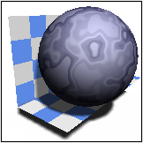 Blue Marble (HQI only) type |
Creates a solid color pattern with a blue marble-like texture. You can change the following parameters:
|
|
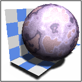 Marble (HQI only) type |
Creates a color pattern with a marble-like texture. In addition to the scale and detail parameters, you can change the following:
|
|
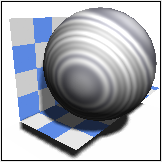 Chrome (HQI only) type |
Creates a color pattern with a chrome-like texture. You can change the following parameters:
|
|
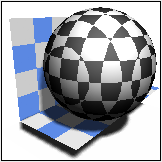 Solid Cubes (HQI only) type |
Creates a color pattern that corresponds to a solid 3D lattice of cubes with alternating colors. In addition to the scale parameter, you can change the following:
|
|
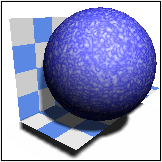 Solid Clouds (HQI only) type |
Creates a random pattern similar to sky and clouds. In addition to the scale and detail parameters, you can change the following:
|
|
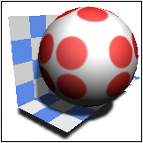 Solid Polka (HQI only) type |
Creates a color pattern of polka dots on the material. In addition to the scale, you can change the following:
|
|
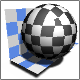 Wrapped Checker type |
Creates an alternating pattern of squares that are folded around the material using the current texture space. In addition to the scale parameter, you can change the following:
|
|
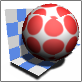 Wrapped Polka type |
Creates a color pattern of polka dots wrapped around the material The parameters for this type are the same as those for Solid Polka (HQI only) type. |
|
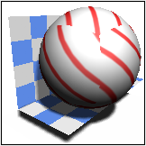 Wrapped Diagonal type |
Creates a color pattern of diagonal stripe wrapped around the material. In addition to the scale, you can change the following:
|
|
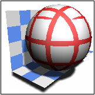 Wrapped Grid type |
Creates a color pattern of a rectangular grid of stripes wrapped around the material. In addition to the scale and width parameters, you can change the following:
|
|
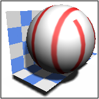 Wrapped S Stripe type |
Similar to Wrapped Diagonal, except the stripes align with the s axis. The s axis is up a plane, along a cylinder, and through the poles of a sphere. The parameters for this type are the same as those for the Wrapped Diagonal type. |
|
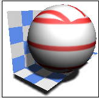 Wrapped T Stripe type |
Similar to Wrapped Diagonal, except the stripes align with the t axis. The t axis is across a plane, around a cylinder, and around a sphere. The parameters for this type are the same as those for the Wrapped Diagonal and the Wrapped S Stripe types. |
|
Wrapped Image type |
Creates a image texture map for the pattern using a TIFF image.
|
|
Simple Decal type |
Creates a decal or a logo without having to create an offset face and a stencil to mask out the region outside the logo. In addition to the Image and TIFF Palette options that let you choose the image, you can change the following:
|
|
Wrapped LI Image type |
Creates a lighter-colored image texture map for the pattern using the same TIFF image specified either in the Wrapped Image or Simple Decal types. |
|
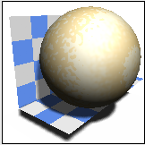 Simple Wood (HQI only) type |
Creates a simple wood pattern with a grainy texture. In addition to the scale parameter, you can change the following:
|
|
Birch (HQI only) type |
Creates a general wood pattern with pre-defined values appropriate to a birch-like appearance. The pattern is based around the idea of having a tree trunk centered on a given axis with concentric rings of light and dark wood colors. In addition to the scale, grain color and grain scale detail parameters, you can change the following:
|
|
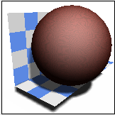 Cherry (HQI only) type |
Creates a general wood pattern with pre-defined values appropriate to a cherrywood-like appearance. The parameters for this type are the same as for the Birch (HQI only) type and other wood types. |
|
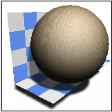 Maple (HQI only) type |
Creates a general wood pattern with pre-defined values appropriate to a maple-like appearance. The parameters for this type are the same as for the Birch (HQI only) type and other wood types. |
|
Oak (HQI only) type |
Creates a general wood pattern with pre-defined values appropriate to a oak-like appearance. The parameters for this type are the same as for the Birch (HQI only) type and other wood types. |
|
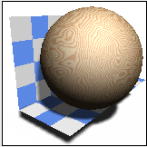 Pine (HQI only) type |
Creates a general wood pattern with pre-defined values appropriate to a pine-like appearance. The parameters for this type are the same as for the Birch (HQI only) type and other wood types. |
|
Wood (HQI only) type |
Creates an advanced wood pattern with concentric rings of light and dark wood. The pattern is based around the idea of having a tree trunk centered on a given axis with concentric rings of light and dark wood colors. By using all the features of this type, you can recreate the appearance of virtually any type of wood. The parameters for this type are the same as for the Birch (HQI only) type and other wood types. |
|
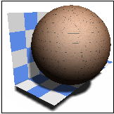 Wrapped Birch Floor type |
Creates a version of the general wrapped wood floor pattern with pre-defined values appropriate to a birch-like appearance. The parameters for this type are the same as for the Birch (HQI only) type, except for truck center and trunk direction. In addition, you can change the following:
|
|
Wrapped Cherry Floor type |
Creates a version of the general wrapped wood floor pattern with pre-defined values appropriate to a cherry-like appearance. The parameters for this type are the same as for the Wrapped Cherry Floor and other wrapped wood types. |
|
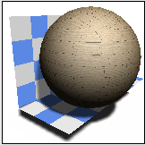 Wrapped Maple Floor type |
Creates a version of the general wrapped wood floor pattern with pre-defined values appropriate to a maple-like appearance. The parameters for this type are the same as for the Wrapped Cherry Floor and other wrapped wood types. |
|
Wrapped Oak Floor type |
Creates a version of the general wrapped wood floor pattern with pre-defined values appropriate to a oak-like appearance. The parameters for this type are the same as for the Wrapped Cherry Floor and other wrapped wood types. |
|
Wrapped Pine Floor type |
Creates a version of the general wrapped wood floor pattern with pre-defined values appropriate to a pine-like appearance. The parameters for this type are the same as for the Wrapped Cherry Floor and other wrapped wood types. |
|
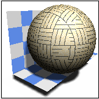 Wrapped Wood Floor type |
Creates a pattern of a wrapped wood floor. The parameters for this type are the same as for the Wrapped Cherry Floor and other wrapped wood types. |
|
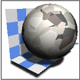 Granite (HQI only) type |
Creates a solid texture with a granite-like pattern. Granite looks the way it does because it is composed of several different sorts of minerals which form grains of various sizes. Different types of granite differ in the relative number and sizes of the different grains of mineral. In addition to the scale parameter, you can use the following parameters to create various types of granite:
|
|
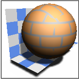 Wrapped Brick type |
Creates a wrapped brick pattern. In addition to the scale and fuzz parameters, you can change the following:
|
|
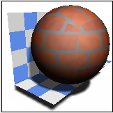 Wrapped T Brick type |
The parameters for this type are the same as for Wrapped Brick, with the following additions:
|
|
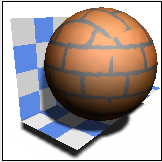 Wrapped Brick Bonds type |
Creates a wrapped color source pattern using brick bonding patterns. Creates wooden flooring using a number of different plank replication patterns and wood types. Replicated wrapped wood types generate the plank-style replicated pattern. The position of the replicated pattern is determined by the texture space you assign to the object surface. The parameters for this type are the same as for Wrapped T Brick, with the following additions:
|
|
Wrapped Rooftiles type |
Creates a pattern that simulates various styles of roof tiles as seen from ground level. Ground level is defined as if you were looking at the roof surface at an angle of about 45 degrees. A roof tile pattern is mainly the result of changes in the normals and variable illumination rather than actual variations in the tile color. This pattern simulates this type of view using just a surface color pattern. In addition to the scale, fuzz and color variation parameters, you can change the following:
|